← Index · ← Previous · Next →
Authors: Zeno Bacciconi, Min Long, Hernan Xavier, Hongyu Lu, Marcello Dalmonte, Zi Yang Meng
Type: theory · Category: strongly correlated electrons · PDF: https://arxiv.org/pdf/2607.06267v1
Analysis basis: full PDF text, analyzed in chunks
Topic relevance: 🔥 analog quantum simulation 4/5 · methods for driven-dissipative 3/5 · non-equilibrium dynamics 2/5 · Keldysh / 2PI / non-Gaussian methods 1/5 · driven-dissipative phase transition 1/5 · entanglement & information structure 1/5
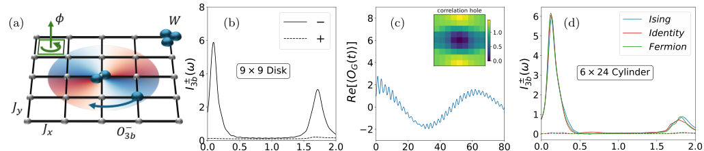
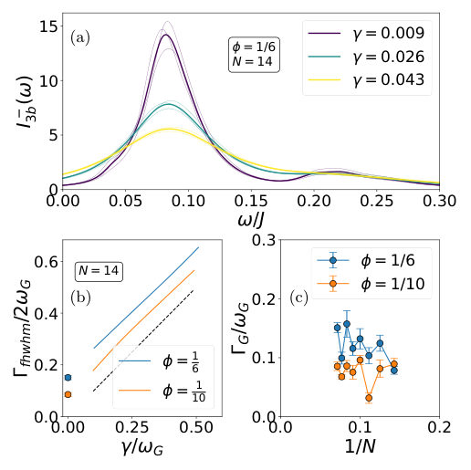
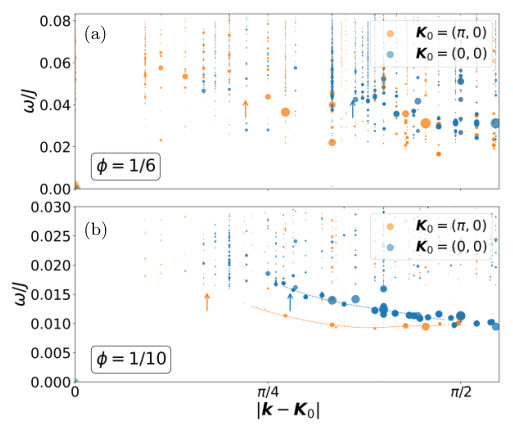
Summary. The paper investigates the collective excitations of non-Abelian lattice FQH states, focusing on the chiral graviton mode. Using advanced numerical simulations like MPS and ED, the authors successfully demonstrate the existence of this long-lived excitation using 3-body correlators. This work provides a key diagnostic tool for characterizing exotic topological phases relevant to modern quantum simulation experiments.
Why it may be interesting. This bridges concepts from topological quantum matter (FQH states) with measurable excitation signatures (graviton modes), providing concrete predictions for experimental realization in cold atom platforms.
Main problem. The study aims to investigate key excitation properties, specifically the existence of a chiral graviton mode (CGM), in non-Abelian lattice Fractional Quantum Hall (FQH) states beyond just their ground state characteristics.
Main result. The authors demonstrated the first observation of a long-lived chiral graviton mode using chiral 3-body correlators on lattice non-Abelian states, showing robustness across different geometries and topological sectors.
Method. A combination of advanced numerical techniques was employed, including full exact diagonalization (fED), band-projected ED (pED), and Matrix Product State (MPS) simulations to calculate spectral densities from 3-body correlators.
Model / system. The system models non-Abelian FQH states using the bosonic Harper–Hofstadter model realized on a square lattice, specifically targeting the $ u=1$ Moore–Read ground state. The Hamiltonian includes hopping terms and three-body onsite interactions.
Key observables. Chiral graviton mode (CGM) spectrum, 3-body correlators ($O^{\pm}_{3b}$), spectral density $I^{\pm}_{3b}(\omega)$, and the intrinsic decay rate ($\Gamma_G$).
Important parameters / regimes. Low flux per plaquette ($\phi$), finite droplet sizes ($9 imes 9$ disk), three-body interaction strength ($W$), and lattice geometry (disk, cylinder, torus).
Assumptions / limitations. The analysis relies on projecting the continuum stress tensor onto lattice operators and making approximations in spectral function analysis due to finite interactions or computational limits.
Figures summary. Figures illustrate the setup involving the graviton operator, show the resolved CGM spectrum from MPS simulations on open disks, demonstrate real-time dynamics after geometric quenches, and compare spectra across different topological sectors.
Paper structure. The work progresses by first establishing the theoretical framework using lattice Hamiltonians, then applying advanced numerical methods (ED/MPS) to calculate 3-body correlators, demonstrating the CGM signal's existence and robustness, and finally analyzing its lifetime via quench dynamics.
Synthetic quantum matter provides a highly tunable route to fractional quantum Hall physics beyond the constraints of conventional electronic materials. However, previous theoretical studies have mostly focused on their ground state properties. It remains unclear to what extent such platforms could reveal key excitation properties of fractional quantum Hall states. Here, we study charge-neutral collective excitations in a non-abelian lattice fractional quantum Hall state realized in the bosonic Harper-Hofstadter model at unity filling factior, realizing a Moore-Read ground state. Combining full exact diagonalization, band-projected exact diagonalization, and matrix-product-state simulations, we demonstrate the existence of a long-lived chiral graviton mode, probed by chiral 3-body correlators, for the first time on lattice non-Abelian states. The graviton signal is topological sector-independent and could be observed via geometric quenches in small open droplets directly relevant to current cold-atom experiments, while other neutral modes, such as the magnetoroton and neutral fermion, are less resolved at presently achievable volumes.
Authors: Gabriele De Angelis, Nicolò Leone, Alessandro Luongo, Alberto Montanaro, Matteo Sanna, Roberto Siagri, Vito Sorianello, Luigi Tallone, Fabrizio Tamburini, Marco Venere
Type: experiment · Category: quantum information and computing · PDF: https://arxiv.org/pdf/2607.06488v1
Analysis basis: full PDF text, analyzed in chunks
Topic relevance: 🔥 QC/QI experiment 4/5 · quantum optics experiment 3/5 · analog quantum simulation 2/5 · entanglement & information structure 1/5 · interference shaping light 1/5 · non-equilibrium dynamics 1/5
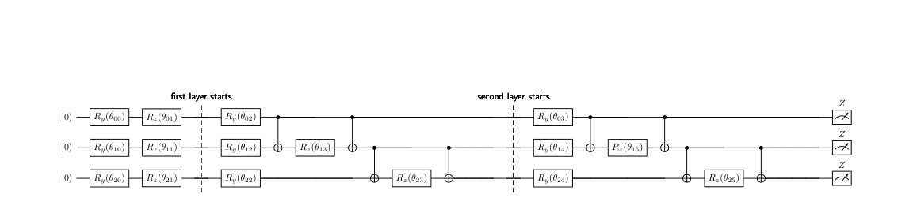
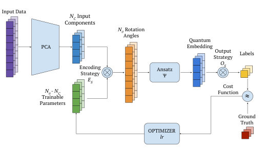
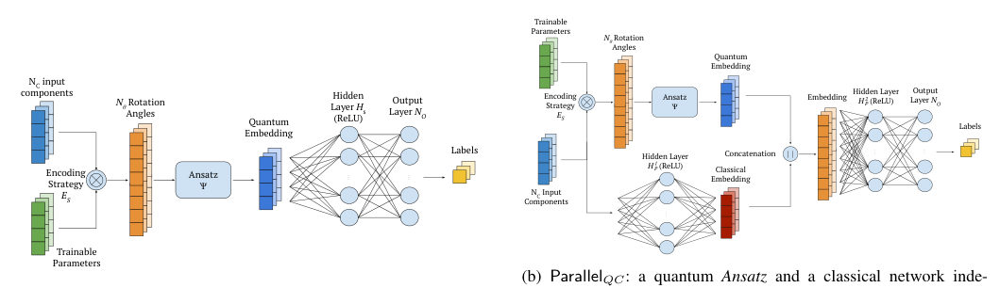
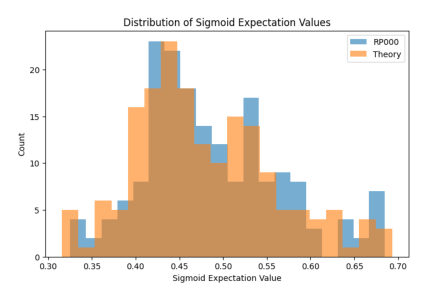
Summary. The paper details the design and rigorous benchmarking of RP000, a silicon-based photonic quantum chip. By applying it to machine learning tasks using hybrid quantum-classical models, the authors demonstrated that the platform achieves high accuracy while showing superior noise resilience compared to superconducting alternatives. This establishes a scalable pathway for efficient quantum computation.
Why it may be interesting. This work provides concrete experimental evidence for scalable, room-temperature quantum computation using photonics, directly addressing the engineering challenges of building practical quantum hardware.
Main problem. The authors designed and benchmarked a room-temperature quantum photonic processor to demonstrate its viability for quantum machine learning tasks.
Main result. The photonic chip achieved higher accuracy than classical networks of comparable size and exhibited superior noise tolerance compared to superconducting processors in benchmarking tests.
Method. They implemented various hybrid quantum-classical architectures (SerialQC, ParallelQC) on the hardware platform and benchmarked them against theoretical simulations and superconducting devices using ML datasets.
Model / system. The system is RP000, a three-qubit photonic processor built on CMOS-compatible silicon photonics. It encodes quantum information in single-photon degrees of freedom and operates via Parametric Quantum Circuits (PQCs).
Key observables. Test accuracy for classification tasks (e.g., STATLOG, YEAST), Mean Absolute Error (MAE), and Root Mean Square Error (RMSE) when comparing chip results to theory.
Important parameters / regimes. The system uses a $(\mathbb{Z}_2)^3$-graded Lie algebra structure; key hyperparameters tuned include the number of classical components ($N_C$) and encoding strategy ($ ext{ES}$).
Assumptions / limitations. The comparison assumes that statevector tomography can be performed on hardware, and superconducting comparisons used matched sampling statistics.
Figures summary. Figures illustrate the layered Ansatz circuit structure (Fig. 1) and detail the entire quantum ML training pipeline involving PCA, encoding, and optimization (Fig. 2).
Paper structure. The paper follows a progression from hardware design/calibration to implementing hybrid QML models (QuantumNN $ ightarrow$ SerialQC $ ightarrow$ ParallelQC), culminating in comprehensive benchmarking against classical and superconducting baselines.
We present the design and benchmarking of RP000, a quantum photonic processor capable of encoding a quantum system in the degrees of freedom of single photons, based on standard CMOS-compatible manufacturing processes, and working at room temperature. We benchmark it against machine learning tasks, evaluating three quantum-classical architectures of increasing complexity. Our experimental results and simulations show that RP000 achieves higher accuracy than classical networks of comparable size in multiple use cases. Compared to a superconducting quantum processor, RP000 exhibits superior noise tolerance. These findings demonstrate that RP000 can provide a scalable route toward efficient quantum applications.
Authors: Dmitry S. Ageev, Jacob Sonnenschein
Type: theory · Category: statistical mechanics · PDF: https://arxiv.org/pdf/2607.05512v1
Analysis basis: full PDF text, analyzed in chunks
Topic relevance: 🔥 non-equilibrium dynamics 4/5 · non-equilibrium universality 3/5 · Keldysh / 2PI / non-Gaussian methods 1/5 · driven-dissipative phase transition 1/5 · entanglement & information structure 1/5 · methods for driven-dissipative 1/5
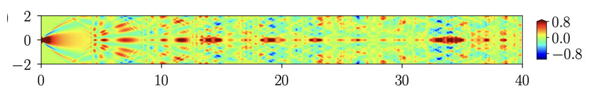
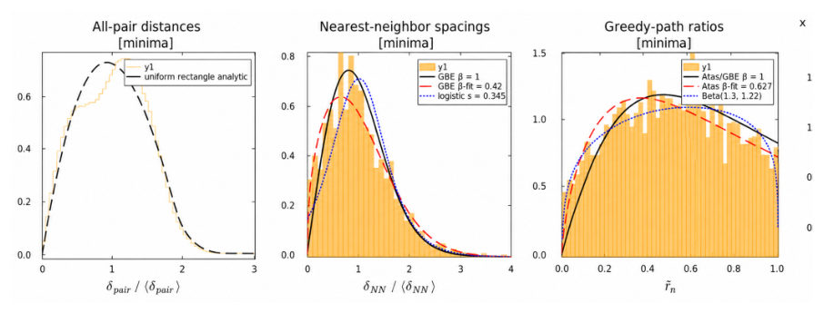
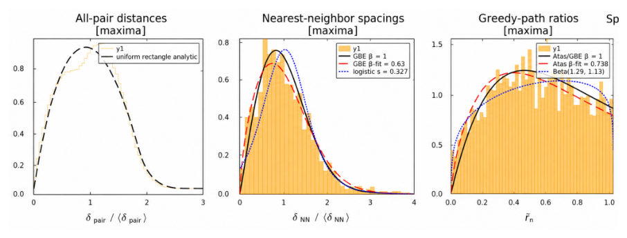
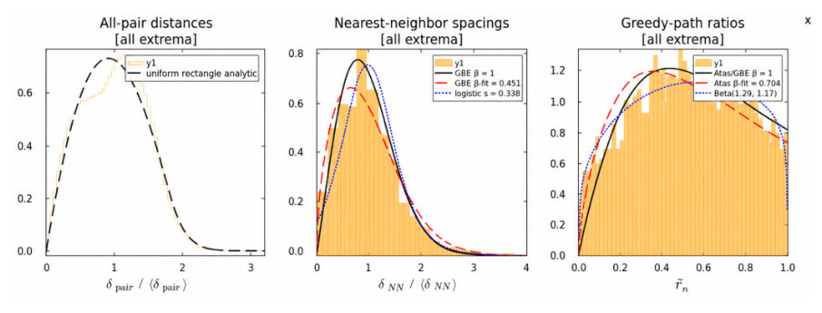
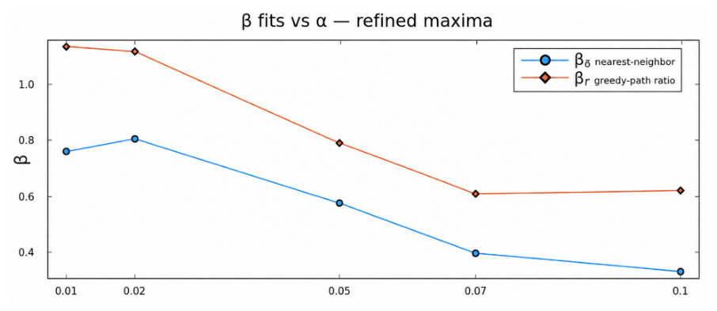
Summary. This paper analyzes the statistical patterns of extrema found in two-point correlation functions following a local quench in free scalar field theories. By applying advanced point process diagnostics, the authors test whether these chaotic features adhere to standard random matrix theory predictions or reveal deeper geometric organization dictated by the dimensionality of the system.
Why it may be interesting. It applies sophisticated tools from quantum chaos and random matrix theory—typically used for energy spectra—to analyze non-equilibrium correlation functions in condensed matter systems, providing a new diagnostic tool for quench dynamics.
Main problem. The study investigates the multidimensional erratic structure of correlation functions generated by local operator quenches in quantum field theory.
Main result. Extremum statistics show behavior approaching $\beta=1$ random-matrix benchmarks in 1+1 dimensions, while higher dimensions reveal geometry-controlled features via the all-pair extremum spatial form factor.
Method. The analysis employs advanced statistical diagnostics—including all-pair distance distributions, nearest-neighbor spacings, and greedy-path ratios—applied to the point cloud formed by the extrema of the two-point correlation function.
Model / system. The system is a free massive scalar field theory undergoing a local operator quench in finite volume (analyzed first in 1+1D, then generalized to 2+1D). The observable is the subtracted equal-time two-point function.
Key observables. Extrema of the correlation function; All-pair distance distribution; Nearest-neighbor spacing statistics; Greedy-path ratio statistics; All-pair extremum spatial form factor (ExFF).
Important parameters / regimes. Euclidean smearing scale ($\alpha$); Dimensionality (1D vs 2D space); Comparison benchmarks ($\beta=1$, GOE).
Assumptions / limitations. The analysis treats the extrema as a point process whose statistics can be mapped onto known random matrix ensembles or geometric laws.
Figures summary. Not specified, but diagnostics are compared against theoretical curves for uniform intervals, rectangles, and cuboids in the form factor analysis.
Paper structure. The paper systematically defines the physical model (local quench), introduces the statistical framework using multiple point-process diagnostics, analyzes results sequentially from 1+1D to 2+1D, and concludes by interpreting the role of geometry versus universal RMT laws.
We study the multidimensional erratic structure of correlation functions produced by local operator quenches in finite-volume free massive scalar field theory in dimensions 2 and 3. The basic observable is the subtracted equal-time two-point function in the locally excited state and its spatiotemporal patterns of extrema. We analyze these extrema by the multidimensional diagnostics recently introduced for chaotic scattering amplitudes and related problems: all-pair distance distributions, nearest-neighbor spacings, greedy-path spacing ratios, and the extrema form factor. For the $1+1$-dimensional local quench we find that, in the regime of small Euclidean smearing, the fitted extremum statistics move close to the $β=1$ random-matrix benchmark, while increasing the smearing scale softens the effective repulsion and moves the distributions away from the GOE-like value. For the $2+1$-dimensional local quench we find that the nearest-neighbor statistics of the refined extrema are close to, or above, the $β=1$ benchmark, and the greedy-path ratio statistics are described by even larger effective $β$ values. Finally we studied the all-pair extrema spatial form factor and found that, in the one-, two-, and three-dimensional cases, its main structure is controlled by the corresponding uniform interval, rectangle, or cuboid geometry of the extrema cloud and found the dip-ram-plateau structure in the last two cases. Thus the form factor provides a complementary global diagnostic of how the extrema fill their effective metric support, while the genuinely nontrivial local and mesoscopic organization is carried by the nearest-neighbor and greedy-path statistics.
Authors: Guillaume Costa, Sergey Nazarenko, Giorgio Krstulovic
Type: theory · Category: quantum gases · PDF: https://arxiv.org/pdf/2607.06062v1
Analysis basis: full PDF text, analyzed in chunks
Topic relevance: 🔥 non-equilibrium universality 4/5 · non-equilibrium dynamics 3/5 · Keldysh / 2PI / non-Gaussian methods 1/5 · analog quantum simulation 1/5 · driven-dissipative phase transition 1/5 · methods for driven-dissipative 1/5
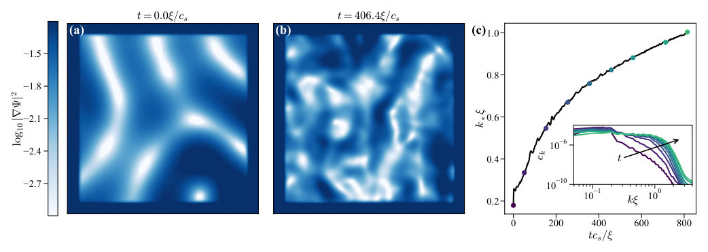
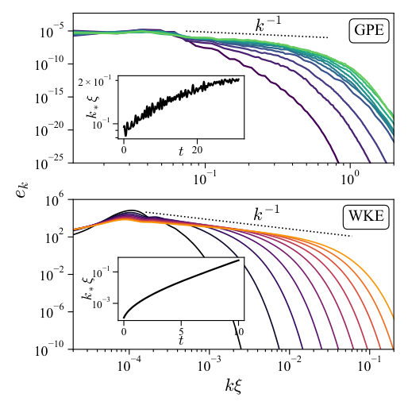
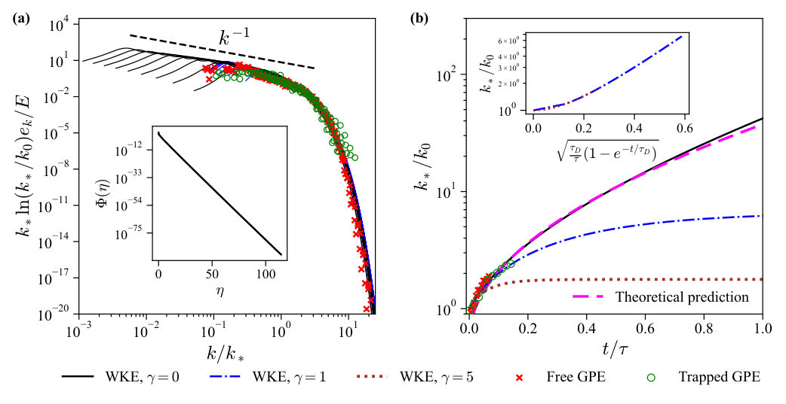
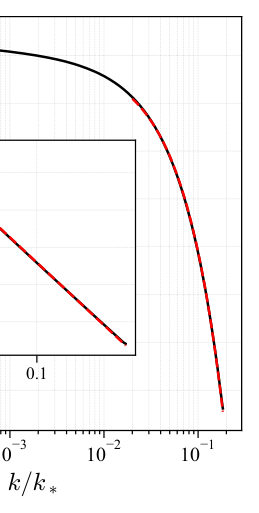
Summary. This paper analyzes the turbulent decay of two-dimensional Bose-Einstein condensates by studying their energy spectrum evolution. Using both GPE simulations and the derived Wave Kinetic Equation, the authors prove that the system reaches a universal self-similar state. This finding quantifies how nonlinear wave interactions efficiently transfer energy to smaller length scales in these quantum gases.
Why it may be interesting. This work provides deep insights into non-equilibrium dynamics in quantum many-body systems, specifically characterizing how energy cascades in BECs through turbulence, which is crucial for understanding nonlinear wave physics in cold atom experiments.
Main problem. The study investigates the nonstationary, turbulent evolution of density waves in two-dimensional Bose-Einstein condensates (BECs) when driven out of equilibrium.
Main result. The dynamics exhibit universal self-similar behavior characterized by a single constant $\beta$, suggesting that energy transfer towards small scales follows predictable scaling laws regardless of minor details.
Method. The authors employ numerical simulations on the Gross-Pitaevskii Equation (GPE) and derive/solve the corresponding Wave Kinetic Equation (WKE) using self-similar ansatz solutions.
Model / system. The system is a 2D BEC, modeled by the GPE. The analysis focuses on wave turbulence dynamics in the acoustic regime, where energy cascades from large to small scales.
Key observables. Energy spectrum $e_k$, the characteristic wavevector scale $k^*(t)$, and the universal constant $\beta$.
Important parameters / regimes. The system operates in the acoustic regime ($\xi \ll 1$), and the dynamics are characterized by initial energy $E_0$ and damping rates $\gamma$.
Assumptions / limitations. Key assumptions include the validity of Weak Wave Turbulence Theory (WWTT) for this geometry, and approximations made when simplifying the collision integral in the WKE.
Figures summary. Figures illustrate snapshots showing structure formation, time evolution of $k^*$, and confirmation of self-similar dynamics by collapsing spectra onto master curves.
Paper structure. The paper progresses from analyzing GPE simulations to deriving the WKE, then solving for a self-similar ansatz solution $\Phi(\eta)$, leading to simplified differential equations whose asymptotic solutions yield the universal constant $\beta$.
When driven out of equilibrium, a Bose-Einstein condensate develops nonlinearly interacting density waves that trigger a turbulent cascade, transferring energy toward small scales. In this article, we investigate the nonstationary evolution of solutions to the two-dimensional Gross-Pitaevskii equation. Through numerical simulations of both the GPE and the corresponding Wave Kinetic Equation, we identify self-similar solutions relevant to atomic and polariton Bose-Einstein Condensates. These solutions exhibit characteristics of both first and second kind self-similarity. In particular, we show that the dynamics of the propagating front is universal, governed by a dimensionless universal constant $β$, which we determine numerically.
Authors: Daniel Loss
Type: both · Category: quantum information and computing · PDF: https://arxiv.org/pdf/2607.06219v1
Analysis basis: full PDF text, analyzed in chunks
Topic relevance: 🔥 QC/QI experiment 4/5 · spintronics-quantum-optics interface 3/5 · exotic spin models in light-matter 1/5 · non-equilibrium dynamics 1/5
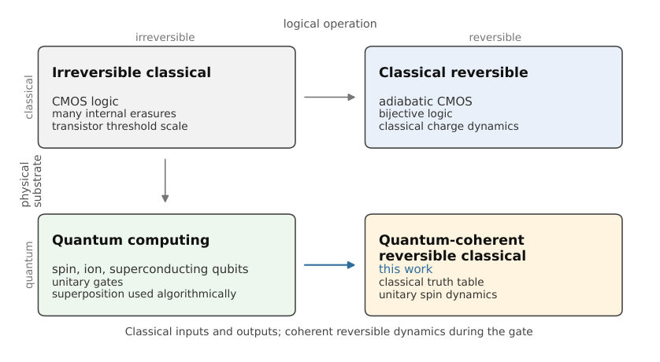
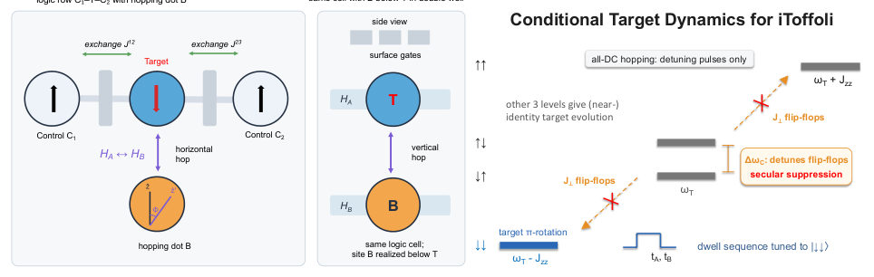
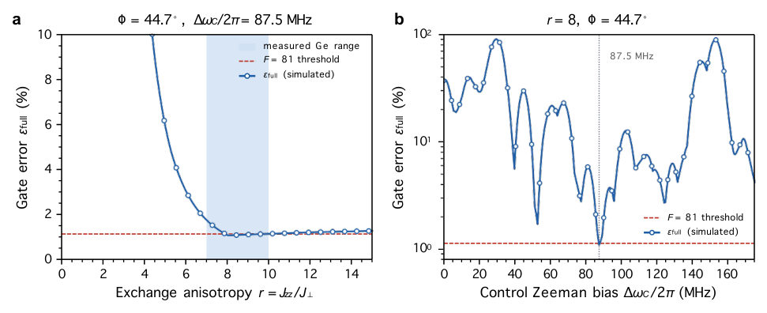
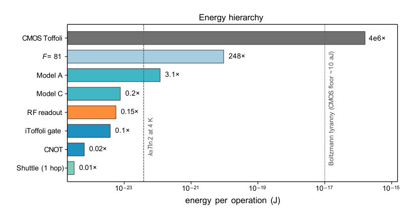
Summary. This work proposes implementing reversible classical computation by harnessing coherent spin dynamics in semiconductor quantum dots. By using unitary spin rotations instead of irreversible switching, they achieve gate energies far below current thermodynamic limits. The resulting hardware is dual-use, supporting both quantum algorithms and ultra-low-power classical logic.
Why it may be interesting. It provides a concrete, solid-state realization pathway for quantum-coherent classical computation, bridging the gap between purely quantum algorithms and energy-efficient classical logic using spin dynamics.
Main problem. The paper addresses the high energy dissipation of classical computation by proposing a method for reversible logic that utilizes quantum coherence.
Main result. They demonstrate that coherent spin dynamics in semiconductor quantum dots can implement universal, low-energy reversible gates (like iToffoli) using only classical basis states for I/O.
Method. The core mechanism involves implementing unitary gate operations via controlled spin precession and exchange coupling within a spin quantum-dot array, avoiding irreversible switching.
Model / system. The physical platform is a spin quantum-dot array utilizing Ge/Si hole spins. The dynamics are governed by a general spin Hamiltonian, with gates realized through time-dependent unitary evolution derived from specific hopping Hamiltonians.
Key observables. Gate energy (shown to be orders of magnitude below the Landauer limit), gate fidelity ($\sim 99.97\%$), and the error landscape ($\epsilon_{ ext{full}}$).
Important parameters / regimes. The system relies on anisotropic exchange coupling ($J_{zz}$), DC voltage pulses, and operating temperatures near 4 K.
Assumptions / limitations. Assumes the spin-diabatic limit for angle changes and that coherence time ($T_1$) is much longer than the gate operation time.
Figures summary. Figures compare different computing regimes (CMOS vs. quantum/reversible), show the structure of the iToffoli cell, and illustrate the error landscape dependence on anisotropy or bias.
Paper structure. The paper introduces the problem of energy dissipation in computation, details the physical model using spin dynamics for reversible gates, presents simulation results showing gate fidelity and low energy costs, and concludes by emphasizing the dual-use nature of the hardware.
Rising energy demand from data-centre and AI applications has renewed interest in reversible computation, where logic need not dissipate heat at every step if information is uncomputed. Implementations have so far been classical: adiabatic CMOS reduces dissipation by slowing charge motion but is still limited by the threshold physics of transistors. Here we propose classical reversible logic implemented by coherent spin dynamics in a spin quantum-dot array, with inputs and outputs in classical basis states and no algorithmic use of superposition. The same spin stores, transports, and computes, with unitary rotation replacing irreversible switching. The universal building block is an iToffoli gate driven by DC voltage pulses and anisotropic exchange in Ge/Si hole spins. Simulations with experimental parameters reproduce the Toffoli truth table and yield a testable error landscape. Because shuttling transports the bit without measurement, logic and data movement remain reversible until readout. Millivolt pulses on femtofarad gates yield a gate energy below the 4~K Landauer scale, about five (eight) orders of magnitude below a room-temperature CMOS Toffoli with (without) 4 K cooling overhead. The same semiconductor hardware is therefore dual-use, supporting quantum algorithms when superposition is used and classical reversible logic otherwise.
Authors: Damien Quinn, Joshuah T. Heath, Graham Kells
Type: theory · Category: quantum information and computing · PDF: https://arxiv.org/pdf/2607.06474v1
Analysis basis: full PDF text, analyzed in chunks
Topic relevance: 🔥 entanglement & information structure 4/5 · analog quantum simulation 1/5 · methods for driven-dissipative 1/5 · non-equilibrium dynamics 1/5 · non-equilibrium universality 1/5
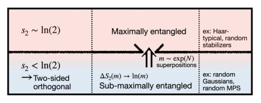
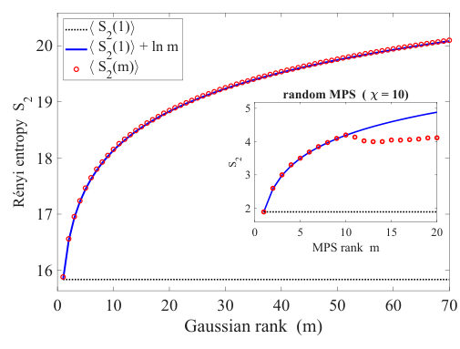
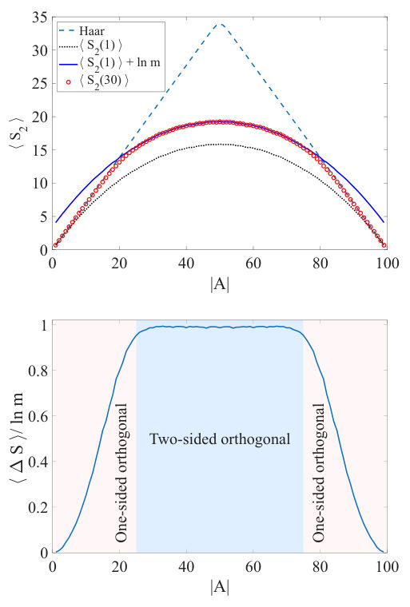
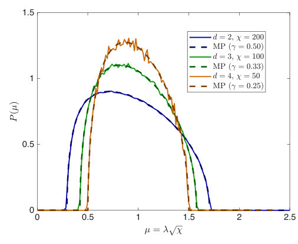
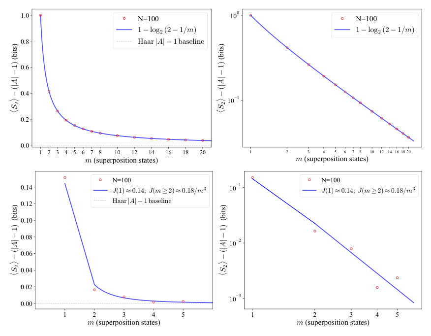
Summary. This work characterizes how the total entanglement scales when forming superpositions of randomized quantum states. It finds a sharp transition: if the components are sub-maximally entangled, the superposition exhibits a universal logarithmic enhancement ($\ln m$) in its entanglement. The analysis uses Rényi entropy and purity calculations to distinguish this behavior from other scaling regimes.
Why it may be interesting. It provides rigorous theoretical tools (like $s_2$ classification) to distinguish between different scaling laws of entanglement growth when combining multiple quantum resources, which is fundamental for understanding quantum computation limits.
Main problem. The paper investigates universal entanglement properties inherent to forming superpositions of randomized quantum states.
Main result. It establishes that the entanglement enhancement scales universally as $\Delta S(m) = \ln(m)$ in the sub-maximally entangled regime, contrasting with other scaling behaviors observed in different state ensembles.
Method. The analysis uses second Rényi entropy density ($s_2$) to classify entanglement regimes and calculates purity fluctuations using tensor network formalisms and random matrix theory techniques.
Model / system. The study considers superpositions of randomized states, including Gaussian states, Matrix Product States (MPS), and stabilizer states, in the context of many-body quantum systems.
Key observables. Second Rényi entropy density ($s_2$), total entanglement $\langle S_2(m) angle$, and the logarithmic enhancement $\Delta S_2(m)$.
Important parameters / regimes. The classification depends on $s_2$ relative to $\ln(2)$, and scaling is analyzed for varying numbers of components, $m$.
Assumptions / limitations. Key results rely on assuming one-sided orthogonality of reduced density matrices in the sub-maximal regime, or averaging over random phases/Haar ensembles.
Figures summary. Figures illustrate the two entanglement classes based on $s_2$, show $\langle S_2(m) angle$ vs. Gaussian rank for MPS confirming $\ln(m)$ growth, and display purity fluctuations scaling as $1/m^3$.
Paper structure. The paper progresses by defining the problem using Rényi entropy, deriving the universal logarithmic enhancement ($\ln m$) in the sub-maximal regime via orthogonality constraints, and then applying this framework to specific models like Gaussian states and MPS.
We investigate universal entanglement properties inherent to superpositions of randomized states. We find that an $m$-fold superposition of typical states may be classified into two distinct entanglement classes via the 2nd Rényi entropy density $s_2$. The maximally entangled regime is defined by $s_2 \sim \ln (2)$, for which superposition adds no additional entanglement. The sub-maximally entangled regime, $s_2<\ln 2$, instead constrains the reduced density matrices of independent components to be orthogonal in the thermodynamic limit, which fixes the entanglement of the superposition to a logarithmic enhancement $ΔS(m)=\ln (m)$. As a consequence, an exponentially large number of superpositions is required to transition from the sub-maximally entangled class to maximal entanglement. We explicitly calculate $s_2$ and the logarithmic enhancement, and demonstrate orthogonality for two canonical examples of the sub-maximally entangled regime (superpositions of pure Gaussian states and of random matrix-product states). We also examine the entanglement of superpositions of random stabilizer states, and discuss their relaxation to the Haar limit.
Authors: Shintaro Maekawa, Takao Otsuka, Riku Masui, Juan W. Pedersen, David Muñoz Ramo, Yasushi Okuno, Kentaro Yamamoto
Type: both · Category: other · PDF: https://arxiv.org/pdf/2607.05786v1
Analysis basis: full PDF text, analyzed in chunks
Topic relevance: 🔥 QC/QI experiment 4/5 · non-equilibrium dynamics 2/5 · methods for driven-dissipative 1/5
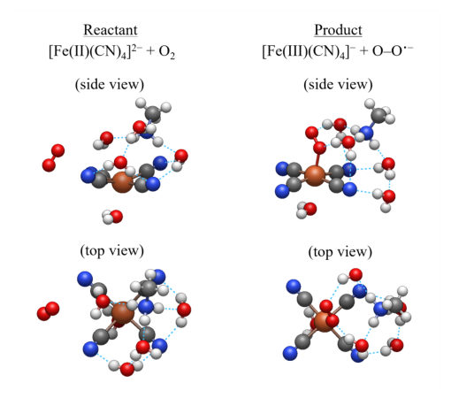
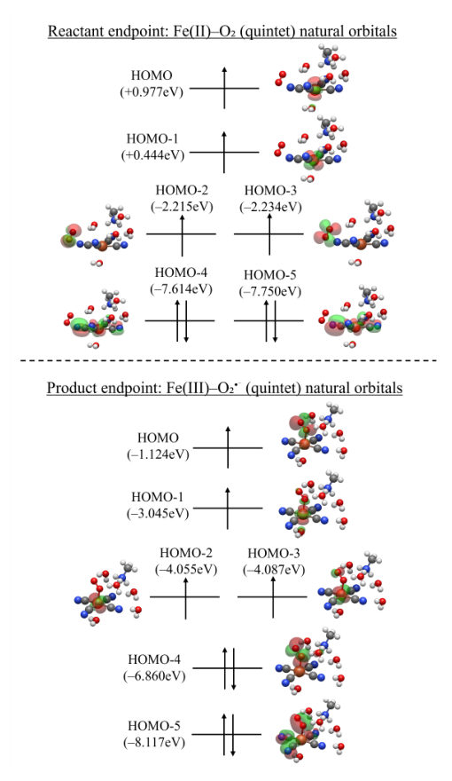
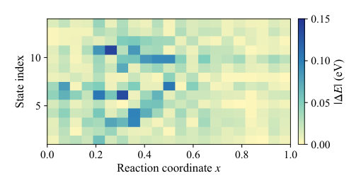
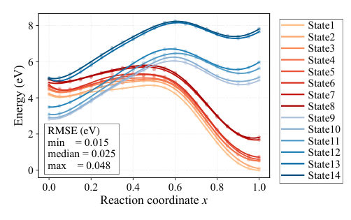
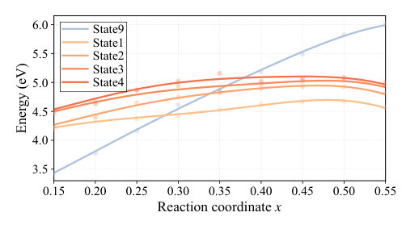
Summary. The authors present a novel Quantum-HPC hybrid workflow to simulate electronic dynamics in enzyme active sites using a Fe-complex model. They derive an effective Hamiltonian from CASSCF calculations and map it onto quantum circuits suitable for trapped-ion hardware. By measuring the product population, they demonstrate that current quantum computers can reproduce key chemical trends, establishing a powerful diagnostic tool for reduced quantum models.
Why it may be interesting. This work directly bridges high-level quantum chemistry calculations with near-term quantum hardware capabilities by providing a physically motivated, observable-based diagnostic (population transfer) to validate complex electronic structure simulations.
Main problem. Developing a reliable quantum-hybrid workflow to simulate electronic dynamics in complex, multi-state biomolecular reaction centers.
Main result. The quantum hardware successfully reproduced the key trend of product population transfer identified by classical models, validating the use of reduced Hamiltonians for chemically interpretable dynamics on current trapped-ion platforms.
Method. A Quantum-HPC hybrid workflow combining state-averaged CASSCF calculations to derive a reduced Hamiltonian, mapping it to a quantum circuit, and simulating time evolution on a trapped-ion quantum computer.
Model / system. The study uses a Cytochrome P450-inspired Fe-complex model. The dynamics are governed by an effective, reaction-coordinate-dependent Hamiltonian derived from SA-CASSCF calculations across multiple electronic states.
Key observables. Product-manifold population $p_P(t)$ as a function of the reaction coordinate ($x$), which serves as the primary diagnostic observable for state mixing.
Important parameters / regimes. Coupling cutoff ($\epsilon = 0.02$ eV) and Trotterization steps ($M=30$) are critical parameters used to adapt the simulation for current NISQ hardware constraints.
Assumptions / limitations. The primary assumptions involve constructing a reduced Hamiltonian from an active space, which inherently involves approximations regarding state completeness and neglecting environmental coupling beyond the defined subspace.
Figures summary. Figures compare the product-manifold population $p_P$ measured on the Reimei trapped-ion hardware against its emulator counterpart across varying reaction coordinates ($x$), demonstrating agreement in the characteristic maximum near $x=0.3$.
Paper structure. The paper establishes a methodology by first deriving an effective Hamiltonian from high-level electronic structure calculations (SA-CASSCF). It then addresses NISQ constraints via circuit optimization (pruning/Trotterization) before demonstrating the full workflow end-to-end on trapped-ion hardware, validating the dynamics using population transfer observables.
We introduce population-transfer dynamics as a practical validation observable for active-space-derived reduced Hamiltonians in multistate reaction-center chemistry. Using a cytochrome P450-inspired Fe-complex model, we construct a reaction-coordinate-dependent effective Hamiltonian from state-averaged complete active-space self-consistent field (SA-CASSCF) calculations, map it to a quantum-circuit representation suitable for current hardware, and propagate dynamics from the reactant-side ground state. The reduced Hamiltonian reproduces the SA-CASSCF reference with an RMS deviation of 0.030 eV and a maximum absolute deviation of 0.143 eV. As a dynamics-based diagnostic, the product-manifold population p_P(t) identifies a pronounced near-degeneracy region around x = 0.3, where state mixing is strongest. Classical exact time evolution yields a product population of 0.488 at x = 0.3 after 10 fs, compared with 7.26 x 10^-2 at x = 0.2 and 5.90 x 10^-3 at x = 0.0. To enable execution on current trapped-ion hardware, we examine the trade-off between dynamical fidelity and circuit resources through coupling pruning and first-order Trotterization. A coupling cutoff of 0.02 eV reduces the non-zero coupling set from 32 to 7 while preserving the dominant transfer pathways, and M = 30 provides the best practical operating point. Finally, we demonstrate the workflow on Quantinuum's trapped-ion quantum computer Reimei. The hardware reproduces the key reaction-coordinate trend identified by the classical model, including the maximum at x = 0.3, where the measured product population is 0.42 on hardware and 0.43 on the matched emulator. This work establishes a dynamics-based framework for assessing active-space-derived reduced Hamiltonians and demonstrates chemically interpretable multistate electronic dynamics on current trapped-ion hardware.
Authors: Arkadiusz Kosior, Jia Wang
Type: theory · Category: disordered systems and neural networks · PDF: https://arxiv.org/pdf/2607.05611v1
Analysis basis: full PDF text, analyzed in chunks
Topic relevance: 🔥 entanglement & information structure 4/5 · analog quantum simulation 1/5 · non-equilibrium dynamics 1/5 · non-equilibrium universality 1/5
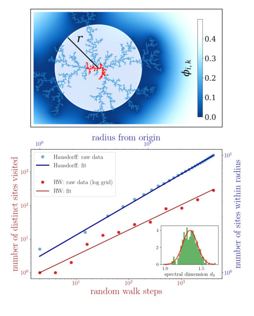
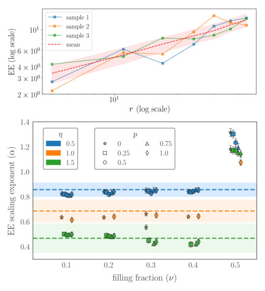
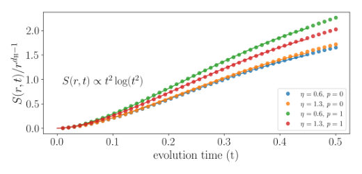
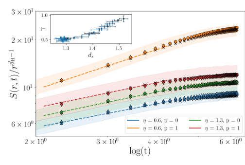
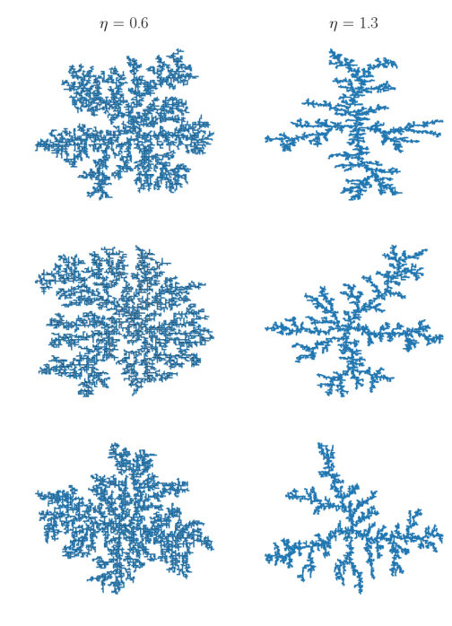
Summary. The authors study the entanglement properties of noninteracting fermions on geometrically disordered random fractal lattices. They find that both ground-state and time-evolving entanglement are governed by two distinct geometric dimensions: the Hausdorff dimension ($d_H$) controls spatial scaling, while the spectral dimension ($d_s$) dictates slow logarithmic temporal dynamics. This demonstrates that geometry alone can induce complex quantum correlations.
Why it may be interesting. This work provides a concrete example of how purely geometric constraints (fractal structure) can dictate universal scaling laws for quantum information measures like entanglement entropy in free fermionic systems, connecting geometry directly to many-body physics.
Main problem. Investigating how entanglement properties of free fermions are shaped by geometric disorder, specifically on random fractal lattices.
Main result. The ground-state entanglement entropy scales with the Hausdorff dimension ($d_H$), while dynamic entanglement growth exhibits a characteristic logarithmic time dependence governed by the spectral dimension ($d_s$).
Method. Theoretical calculation of bipartite entanglement entropy (von Neumann entropy) for noninteracting fermions, combined with numerical simulation of fractal lattice generation and analysis of scaling laws.
Model / system. Noninteracting spinless fermions described by a tight-binding Hamiltonian on Random Fractal Lattices (RFLs). These lattices are generated via a stochastic growth algorithm, allowing tuning of geometric ($d_H$) and connectivity ($d_s$) dimensions independently of onsite disorder.
Key observables. Bipartite Entanglement Entropy ($ ext{EE}$), Hausdorff dimension ($d_H$), Spectral dimension ($d_s$), and entanglement scaling exponents.
Important parameters / regimes. Growth parameter ($\eta$), missing link probability ($p$), filling fraction ($ u$), subsystem size ($L$), and time ($t$).
Assumptions / limitations. The system is modeled using noninteracting spinless fermions; results are derived by averaging over an ensemble of stochastic lattice realizations.
Figures summary. Figures illustrate the fractal growth process, show scaling relations for dimension extraction (Volume vs. radius, $\Omega$ vs. time), and plot entanglement entropy versus subsystem size or time to confirm power-law/logarithmic scaling governed by $d_H$ and $d_s$.
Paper structure. The paper first establishes the physical model on RFLs, then calculates ground-state EE scaling ($\propto r^{d_H}$), followed by analyzing dynamic entanglement growth after a global quench ($S(r, t) \propto r^{d_H-1} [\log t]^\gamma$).
Random fractal lattices provide a geometrically disordered setting in which quantum correlations can be shaped by noninteger dimensionality rather than onsite randomness. We investigate the entanglement properties of noninteracting fermions on random fractal lattices generated by a stochastic growth algorithm. By varying the growth parameter and adding missing links with probability $p$, we tune the Hausdorff and spectral dimensions while keeping the system free of onsite disorder. For ground states at different fillings, we compute the bipartite entanglement entropy of subregions defined by graph distance and analyze its scaling with subsystem size. Over a broad parameter range, we find robust power-law behavior governed primarily by the Hausdorff dimension, consistent with a generalized area law and without the logarithmic enhancement familiar from Euclidean free fermions. We also study entanglement growth following a global quench from an uncorrelated checkerboard state and uncover an asymptotic scaling collapse in which the subsystem-size dependence is governed by the Hausdorff dimension, while the temporal evolution is governed by the spectral dimension. The resulting dynamics are logarithmically slow over an extended intermediate-time window. These results show that geometric randomness alone can generate both nontrivial ground-state entanglement structure and slow quantum-information spreading in free-fermion systems.
Authors: Ainhoa Agulleiro, Fadri Grünenfelder, Raphaël Houlmann, Ana Blázquez, Hugo Zbinden, Davide Rusca
Type: experiment · Category: quantum information and computing · PDF: https://arxiv.org/pdf/2607.06038v1
Analysis basis: full PDF text, analyzed in chunks
Topic relevance: 🔥 QC/QI experiment 4/5 · quantum optics experiment 2/5 · quantum measurements 1/5
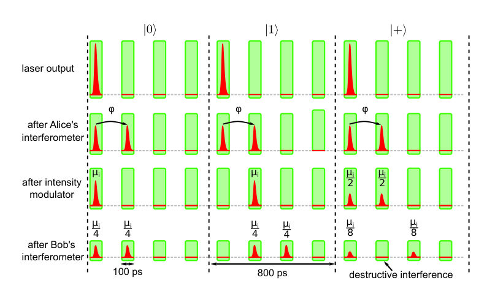
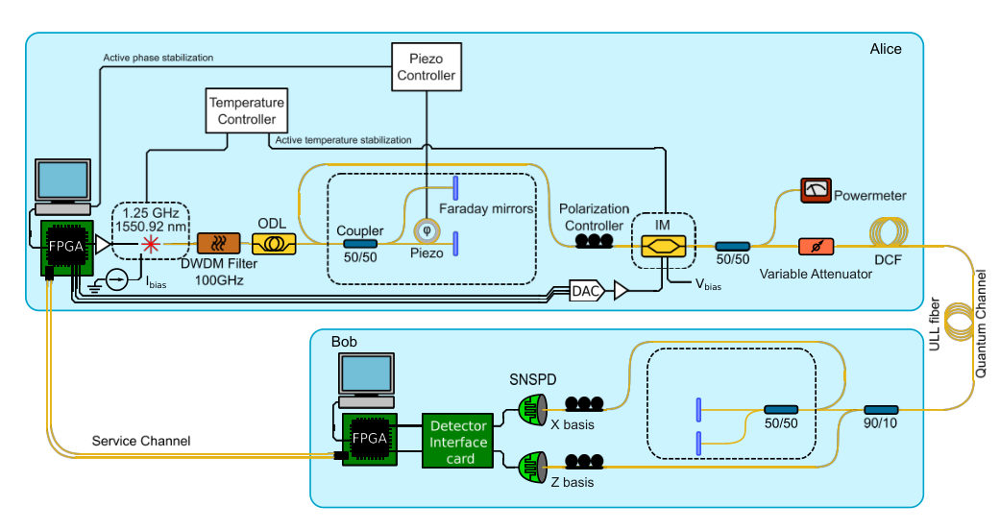
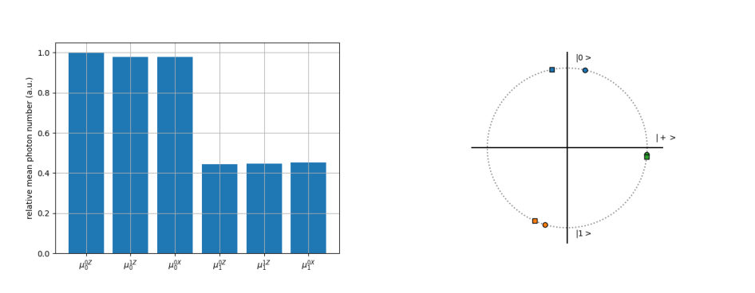
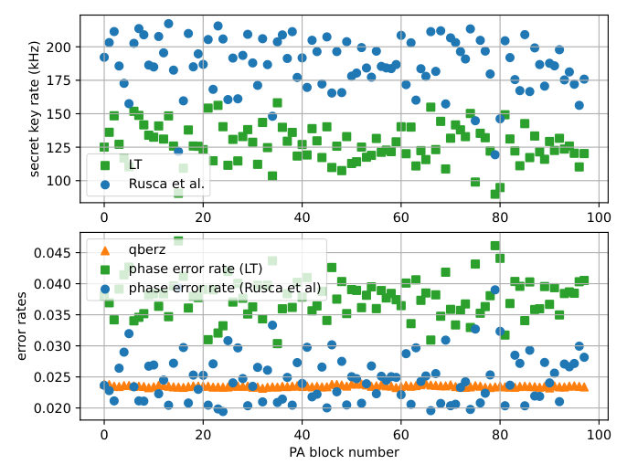
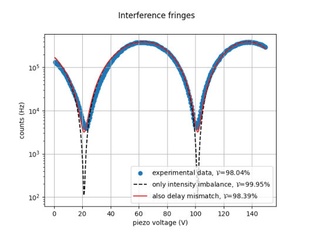
Summary. This paper presents an experimental implementation of a three-state BB84 Quantum Key Distribution protocol designed to be secure despite common State Preparation Flaws. By adapting the Loss-Tolerant method and characterizing these flaws using decoy states, the authors demonstrate key rate security over long distances while accounting for non-ideal hardware performance.
Why it may be interesting. This work provides a highly practical, experimentally validated framework for assessing QKD security under real-world imperfections like state preparation flaws, which is crucial for advancing quantum communication technology.
Main problem. The primary goal is to implement a Quantum Key Distribution (QKD) protocol that maintains security guarantees even when accounting for realistic State Preparation Flaws (SPFs).
Main result. The work successfully adapts the Loss-Tolerant method to ensure secret key distribution remains secure against collective attacks over 150km of fiber without assuming perfect state preparation.
Method. The authors use a three-state BB84 protocol with time-bin encoding and adapt the Loss-Tolerant method to incorporate measurements derived from decoy states, allowing for security analysis under imperfect conditions.
Model / system. The system is an experimental QKD setup using superconducting nanowire single-photon detectors (SNSPDs) and a three-state BB84 protocol. Alice's side uses time-bin encoding, while Bob employs passive basis choice for measurement.
Key observables. Phase error rate ($\phi_Z$) and secret key rate (SKR).
Important parameters / regimes. Fiber length (up to 151km), detector efficiency ($\eta=90\%$), mean photon numbers ($\mu_0, \mu_1$).
Assumptions / limitations. The security analysis is limited to collective attacks; the characterization method incorporates visibility due to delay mismatch naturally.
Figures summary. Figure 1 shows the schematic of states at different stages. Figure 2 details the experimental setup on Alice's and Bob's sides, while subsequent figures plot measured state angles ($ heta, \phi$) and simulate error rates/SKR dependence on these angles.
Paper structure. The paper progresses from describing the physical implementation (Alice/Bob setups) to detailing the measurement diagnostics (SPFs characterization), culminating in the theoretical adaptation of security bounds (Loss-Tolerant method) for finite-key analysis.
We present an implementation of a three-state BB84 protocol with time-bin encoding, one decoy state and a simplified measurement scheme that uses passive basis choice. Our system simplifies the state characterization with respect to previous iterations. We also adapt the loss-tolerant method to our protocol, thus dealing with the measured state preparation flaws. We compare the obtained phase error rate and secret key rate when including the state imperfections and when assuming perfect states. Our results highlight the importance of characterization and implementation security.
Authors: Niko Jokela, Aatu Rajala, Tobias Rindlisbacher
Type: theory · Category: statistical mechanics · PDF: https://arxiv.org/pdf/2607.06286v1
Analysis basis: full PDF text, analyzed in chunks
Topic relevance: 🔥 entanglement & information structure 4/5 · Keldysh / 2PI / non-Gaussian methods 1/5 · non-equilibrium dynamics 1/5
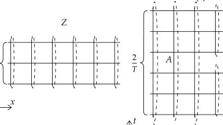
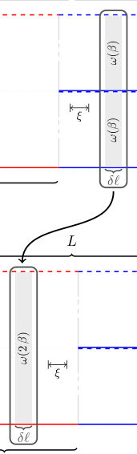
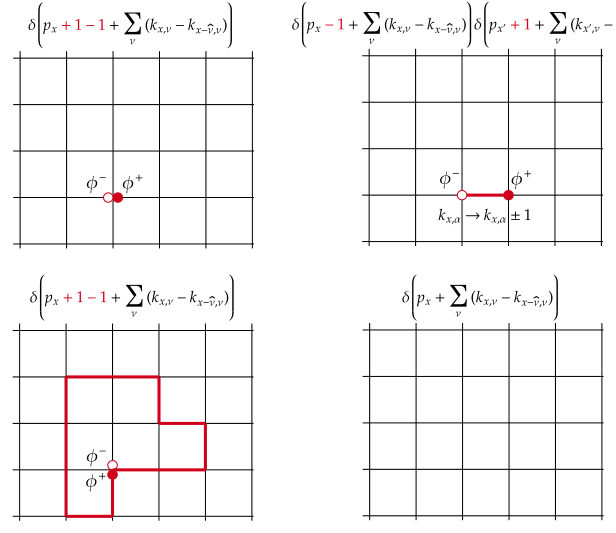
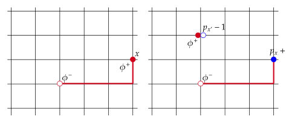
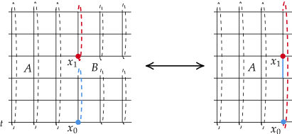
Summary. The paper develops a method to calculate entanglement entropy in the finite-density O(4) model using advanced lattice techniques. It establishes a key theoretical result showing that the rate of change of entanglement entropy with respect to region size directly measures the system's thermal entropy density. This offers a novel, nonperturbative pathway to study thermodynamics using quantum information metrics.
Why it may be interesting. This work provides a powerful theoretical tool showing that fundamental thermodynamic quantities like entropy can be extracted purely from quantum information measures (entanglement), which is highly relevant for understanding many-body physics beyond standard thermal measurements.
Main problem. The central goal is to establish a quantitative, nonperturbative relationship between entanglement entropy (EE) and the thermal entropy density ($s$) in Quantum Field Theories (QFTs), especially at finite chemical potential.
Main result. The derivative of the entanglement entropy with respect to the size of the entangling region ($\partial ext{SEE}/\partial \ell$) is shown to directly yield the thermal entropy density ($s$) in the limit of large subregions, satisfying a generalized Maxwell relation.
Method. The authors use lattice field theory techniques on the O(4) model, employing a dual variable representation and a tailored worm algorithm to compute Rényi entropies nonperturbatively while circumventing the sign problem at finite density.
Model / system. The study focuses on the three-dimensional O(4) model simulated on a lattice at finite chemical potential ($\mu$). The analysis is generalizable to other interacting quantum field theories.
Key observables. Rényi entropies, Entanglement Entropy (SEE), Thermal entropy density ($s$), and the derivative of SEE with respect to subregion size ($\ell$).
Important parameters / regimes. Finite density regime (chemical potential $\mu$), large subregions limit ($\ell o \infty$), and the replica parameter $r o 1$.
Assumptions / limitations. The derivation assumes that in the appropriate thermodynamic limit, bulk properties are governed by free energy densities, allowing the derivative of EE to isolate thermal quantities.
Figures summary. Figure 2 illustrates how increasing the subregion size ($\ell$) changes the dimensionless free energy ($ ilde{\Omega}$), relating this change directly to adding or removing slices from the entangled regions A and B.
Paper structure. The paper first establishes a general framework connecting EE derivatives to thermodynamic potentials using replica methods. It then applies these techniques nonperturbatively to the O(4) model on the lattice at finite density, culminating in the demonstration of the Maxwell relation equivalence.
We nonperturbatively compute Rényi entropies for strip-shaped subregions in the three-dimensional O(4) model at finite density on the lattice. By using a dual variable representation and a tailored worm algorithm, we circumvent the sign problem when sampling the grand canonical ensemble. In the limit of large subregions, we also establish a direct, quantitative relationship between the derivative of entanglement entropy with respect to the size of the entangling region and the thermal entropy density for general quantum field theories, providing a new way to study their thermodynamics. We corroborate this argument with our lattice results by demonstrating that, in the appropriate limit, the derivative of entanglement entropy satisfies the same Maxwell relation as the thermal entropy density.
Authors: Ivana Đorđević, Aleksandra Gočanin, Dragoljub Gočanin
Type: theory · Category: other · PDF: https://arxiv.org/pdf/2607.05715v1
Analysis basis: full PDF text, analyzed in chunks
Topic relevance: 🔥 entanglement & information structure 4/5 · quantum measurements 2/5
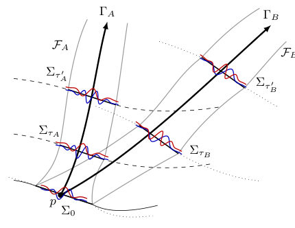
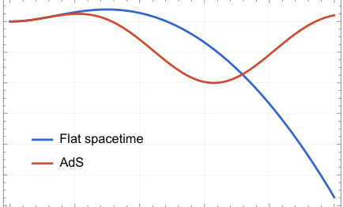
Summary. This theoretical paper proposes that entangled quantum clocks can serve as sensitive operational probes for measuring the curvature of spacetime. By analyzing the violation of a Bell inequality derived from time measurements, the authors show that the presence of curvature induces a measurable correction to the expected quantum correlations. This suggests a novel avenue for testing gravitational theories using quantum resources.
Why it may be interesting. This connects fundamental concepts from quantum information theory (Bell tests) directly to general relativity and spacetime geometry, providing a concrete physical mechanism for testing gravity using quantum resources.
Main problem. The study investigates using entangled quantum clocks as operational probes to detect and quantify spacetime curvature.
Main result. Spacetime curvature modifies operationally defined quantum correlations, allowing a Bell-like parameter derived from clock measurements to exceed the classical bound in curved backgrounds for entangled states.
Method. The authors analyze the covariance of Peres-time observables by formulating the protocol as a Bell-like experiment and calculating the resulting Bell parameter using perturbation theory in the weak-curvature limit.
Model / system. The system consists of two localized nonrelativistic quantum particles propagating along timelike geodesics in a curved spacetime background, each coupled to an internal quantum clock (SWP model). The dynamics are governed by Hamiltonians incorporating gravitational redshift and tidal corrections.
Key observables. Covariance of Peres-time observables ($ ext{Cov}(T_A, T_B)$) and the curvature-corrected Bell parameter ($S_{ ext{curv}}^{\Phi+}$).
Important parameters / regimes. Curvature scalar $R( au)$, oscillator frequency $\omega_0$, and the weak-curvature expansion parameters ($\xi, \epsilon_A, \epsilon_B$).
Assumptions / limitations. The analysis relies on a weak-curvature expansion ($|R|/\omega_0^2 \ll 1$) and uses approximations such as the weak-clock limit.
Paper structure. The paper builds upon previous work, first analyzing the general covariance of time observables. It then reformulates this into a Bell-like test, deriving the curvature correction to the Bell parameter for specific backgrounds like AdS$_2$. The final steps focus on calculating the violation condition based on these derived parameters.
Building on the framework developed by Perche [Phys. Rev. D 106, 025018 (2022)], we study two localized nonrelativistic quantum particles propagating along timelike geodesics in a curved spacetime background. Each particle is coupled to a quantum clock that operationally records the time spent in a prescribed spatial region. We compute the covariance of the resulting time observables for separable and entangled two-particle states, comparing flat and curved backgrounds. We then reformulate the protocol as a Bell-like experiment and show that the Bell parameter can acquire a curvature-induced correction. In particular, a protocol calibrated to saturate the classical bound in flat spacetime can be driven above this bound in curved spacetime for entangled states. We focus on two-dimensional curved backgrounds in which the local tidal term induces an effective harmonic potential in the Fermi-frame description. Our results show that spacetime curvature can modify operationally defined quantum correlations and suggest entangled quantum clocks as probes of spacetime curvature.
Authors: Tien-Ho Chang, Chi-Wei Lee, Jian-Chang Zeng, Chia-Hao Wei, Ching-Shiang Wang, Fu-Yuan Gu, Guan-Yu Yang, Ruei-Syuan Chiang, Ho-Chun Wu, Ming-Hao Lee, Ming-Wen Chu, Guang Li Luo, Ta-Chun Cho, Shawn S. H. Hsu, Tzu-Kan Hsiao
Type: experiment · Category: quantum information and computing · PDF: https://arxiv.org/pdf/2607.06342v1
Analysis basis: full PDF text, analyzed in chunks
Topic relevance: 🔥 QC/QI experiment 4/5 · quantum measurements 1/5 · spintronics-quantum-optics interface 1/5
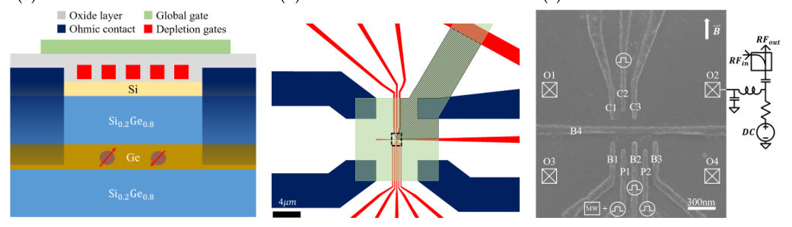
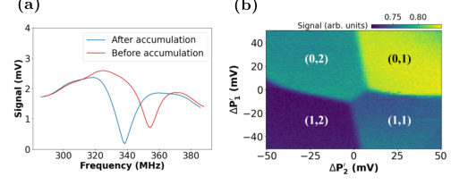
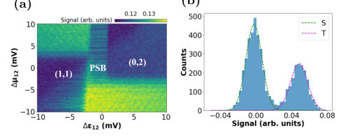
Summary. The paper reports on hole spin qubits in Ge/SiGe structures using a novel global accumulation gate design to simplify device fabrication. They successfully demonstrated single-shot readout and coherent microwave control of two qubits while maintaining performance metrics comparable to complex, overlapping-gate devices. This work paves the way for more scalable solid-state quantum computing architectures.
Why it may be interesting. This work directly addresses hardware limitations in solid-state quantum computing platforms. The successful integration of advanced qubit control (Rabi oscillations, entanglement tuning) into a simpler fabrication scheme makes the platform more accessible for broader research efforts.
Main problem. The primary challenge is overcoming fabrication bottlenecks associated with conventional overlapping-gate devices when building few-qubit spin quantum processors.
Main result. The authors demonstrated single-shot spin readout and coherent control of two qubits using a simplified global accumulation gate design, achieving performance comparable to state-of-the-art methods.
Method. They fabricated Ge/SiGe hole spin qubit devices using a novel global-gate structure and employed RF reflectometry for readout and microwave (MW) pulses for coherent manipulation.
Model / system. The system utilizes hole spin qubits confined in undoped Ge/SiGe quantum well structures. The key innovation is the use of a global accumulation gate combined with single-layer depletion fine gates, significantly simplifying the required lithography compared to traditional overlapping-gate designs.
Key observables. Single-shot spin readout (Pauli Spin Blockade histogram), Rabi oscillation amplitudes/frequencies, and spin coherence times ($T_2^*$).
Important parameters / regimes. Global gate capacitance ($\sim 73$ fF); Coherence times ($T_2^*$ up to $\sim 3 \mu ext{s}$); Exchange tunability (quantified by energy splitting).
Assumptions / limitations. The global-gate design is assumed to maintain the necessary electrical coupling and performance metrics required for high-fidelity quantum operations.
Figures summary. Figures illustrate the device schematic, charge stability diagrams from RF readout, histograms showing singlet/triplet populations (SNR=4.6), and spectroscopy plots detailing spin energy levels, Rabi oscillations, and coherence measurements.
Paper structure. The paper progresses by first introducing the simplified global-gate architecture, then demonstrating single-shot readout via PSB, followed by characterizing coherent control through MW driving, and concluding with measurements of coherence times and exchange coupling tunability.
Hole spin qubits in undoped Ge/SiGe quantum well structures have advanced rapidly in performance and scalability. However, stringent multi-layer patterning and overlay requirements of conventional overlapping-gate devices create a bottleneck for academic proof-of-concept experiments involving few-qubit devices. Here we present fabrication and measurements of Ge/SiGe spin qubit devices with a global accumulation gate and single-layer depletion fine gates, which substantially reduce fabrication complexity. With careful design of the gate-2DHG capacitance, we demonstrate RF-based single-shot spin readout and coherent control of two single-spin qubits. We also characterize the spin coherence times and exchange tunability, which are similar to those reported in recent overlapping-gate Ge/SiGe spin qubit devices. By simplifying fabrication without sacrificing performance, our approach offers a more accessible device design for spin-based quantum technology research.
Authors: Kyunghyun Baek, Yonggi Jo, Hyunchul Nha
Type: theory · Category: quantum information and computing · PDF: https://arxiv.org/pdf/2607.05847v1
Analysis basis: full PDF text, analyzed in chunks
Topic relevance: 🔥 quantum measurements 4/5 · measurement-induced transitions 1/5
Summary. This paper develops a resource theory linking quantum coherence and measurement sharpness for POVMs. It proves that these two quantities coincide when the measurement elements share specific structural properties (like a common eigenbasis). The work provides operational diagnostics, showing how maximal coherence can quantify phase sensitivity in interferometers and correctly characterize imperfect detectors.
Why it may be interesting. It provides a rigorous mathematical framework connecting two fundamental concepts in quantum measurement theory—coherence and sharpness—using resource theories, which is highly relevant for understanding measurement limitations in quantum optics and sensing.
Main problem. To establish a precise quantitative relationship between two resource quantities associated with quantum measurements: quantum coherence and measurement sharpness.
Main result. Maximal coherence of measurement ($C_{\max}^D$) is shown to coincide exactly with the corresponding distance-based sharpness monotone ($S_D$) under specific structural conditions, providing an analogue to state purity correspondences.
Method. The authors define both quantities using resource theory frameworks based on minimizing distances (like the diamond distance) over sets of trivial or reference measurements.
Model / system. The study analyzes general quantum measurements described by Positive Operator-Valued Measures (POVMs) $\{A_x\}_{x=1}^n$ acting on a $d$-dimensional Hilbert space. Physical examples include Mach-Zehnder interferometers and noisy photon-number resolving detectors.
Key observables. Maximal Coherence of Measurement ($C_{\max}^D$), Distance-based Sharpness Monotone ($S_D$), Fisher Information ($I(\phi)$), and visibility ($ u$).
Important parameters / regimes. The equivalence holds when POVM elements share a common eigenbasis or admit a common mutually unbiased basis (MUB) structure.
Assumptions / limitations. The equivalence theorems rely on the structural assumption that the POVM elements share a common eigenbasis or MUB structure; otherwise, $C_{\max}^D$ and $S_D$ may diverge.
Figures summary. Figures illustrate the comparison between sharpness measures ($ ext{SD}$) and maximal coherence ($ ext{C}_{\max}^D$) for both joint X–Y POVMs and imperfect PNRDs, showing agreement under ideal conditions but divergence otherwise.
Paper structure. The paper develops resource theories for measurement, defining $C_{\max}^D$ via basis optimization and $S_D$ via fuzzifying operations. It then proves the equivalence theorems under specific structural assumptions and validates these results using physical examples like interferometry.
A resource theory of quantum measurement can be addressed in terms of quantum coherence and measurement sharpness, respectively. The former analyzes the off-diagonal structure of POVM elements in a predetermined basis while the latter analyzes the deviation from trivial, state-independent, measurements. We establish a direct connection between the two resource theories by identifying measurement sharpness as the maximal coherence that is achievable under all possible unitary changes of the reference basis. For a broad class of POVMs whose elements share a common eigenbasis, we show that the maximal distance-based coherence of measurement coincides exactly with the corresponding distance-based sharpness monotone. We further extend this equivalence, with element-additive distances, to POVMs whose elements admit a common mutually unbiased basis structure. These results provide a measurement-theoretic analogue of the maximal-coherence \& purity correspondence for quantum states. We also show that the maximal coherence of measurement is faithful with respect to trivial measurements and is monotonic under fuzzifying operations for dichotomic measurements, as well as under mixed-unitary and unitarily covariant preprocessing channels. Finally, we illustrate the operational meaning and limitations of the equivalence through qubit POVMs, single-photon phase sensing, and noisy photon-number resolving detection. In particular, the maximal Fisher information in a Mach-Zehnder interferometer is shown to be determined by the squared maximal coherence of the measurement, while in an imperfect photon-number resolving detector the maximal coherence behaves as a proper sharpness monotone, unlike conventional PVM-based unsharpness measures.
Authors: Kazumi Kasaura, Kei Tsukamoto, Kento Mori, Risa Mizuno, Takahiro Namatame, Yuta Oriike, Masaya Taniguchi, Sho Sonoda, Hayata Yamasaki
Type: theory · Category: quantum information and computing · PDF: https://arxiv.org/pdf/2607.05492v1
Analysis basis: full PDF text, analyzed in chunks
Topic relevance: 🔥 entanglement & information structure 4/5
Summary. This work develops a comprehensive Lean 4 library to formally verify core concepts in quantum information theory. The central achievement is the machine-checkable proof of the Data Processing Inequality for the sandwiched Rényi relative entropy. By formalizing these foundational theorems, the paper establishes a robust platform for future theoretical and AI-assisted research.
Why it may be interesting. While focused on abstract theory, the rigorous formalization of fundamental quantum resource theorems like the DPI provides a powerful mathematical toolkit applicable to understanding information flow and correlations in any physical system described by quantum channels.
Main problem. The primary goal is to provide a machine-checkable, formal infrastructure for quantum information theory, specifically by formalizing the Data Processing Inequality (DPI) for the sandwiched Rényi relative entropy.
Main result. The authors successfully derive a Lean 4 formalization of the DPI and establish strong subadditivity as a direct corollary. This provides foundational, machine-verified tools for future AI-assisted research in the field.
Method. The methodology involves developing a reusable, basis-independent operator-theoretic framework within the Lean 4 proof assistant. Key mathematical techniques include utilizing real continuous functional calculus and formalizing complex noncommutative trace inequalities.
Model / system. The theory applies to finite-dimensional quantum systems described by positive semidefinite operators ($ ho$, $\sigma$) and governed by completely positive trace-preserving (CPTP) quantum channels ($\Phi$).
Key observables. Sandwiched Rényi relative entropy ($D_\alpha( ho\|\sigma)$), quasi-entropy, von Neumann entropy ($S( ho)$), and various noncommutative trace inequalities.
Important parameters / regimes. The parameter $\alpha$ governing the Rényi divergence ($\alpha \in [1/2, 1) \cup (1, \infty)$); the limit $\alpha o 1$.
Assumptions / limitations. The framework requires careful handling of support conditions and necessitates separating proofs for positive definite versus positive semidefinite operators.
Paper structure. The paper builds a comprehensive Lean 4 library, first establishing the operator-theoretic foundation (states, channels, traces). It then tackles noncommutative inequalities (monotonicity, convexity) before culminating in the formal proof of the DPI by combining variational formulas with Haar averaging techniques.
Quantum information theory is built on entropic quantities; among them, the sandwiched Rényi relative entropy is a fundamental divergence with various applications, and its data processing inequality (DPI) under quantum channels is a cornerstone result. In this work, we present a Lean 4 library for quantum information, designed as a reusable formal infrastructure for theoretical analysis. As a central demonstration of the library, we formalize the DPI for the sandwiched Rényi relative entropy for positive semidefinite operators on finite-dimensional quantum systems. The library provides a basis-independent operator-theoretic framework for finite-dimensional quantum mechanics compatible with the standard mathematical library Mathlib, including reusable interfaces for finite-dimensional systems, states, channels, tensor products, partial traces, Choi operators, Kraus representations, and Stinespring representations. It also builds infrastructure for noncommutative trace inequalities, including operator monotonicity and convexity via the real continuous functional calculus, block-operator positivity, Hilbert-Schmidt operator spaces, Jensen's operator inequality, generalized perspectives, operator power means, and Lieb-Ando trace inequalities. On top of this framework, we formalize entropy-specific ingredients for the DPI: variational formulas for the sandwiched quasi-entropy via Young and reverse-Young inequalities, tensor-product compatibility of real powers, and Haar measures on unitary groups. Together, these components yield a Lean formalization of the DPI, give strong subadditivity as a corollary, and provide the last missing component needed to complete the Lean formalization of the generalized quantum Stein's lemma. More broadly, the development provides machine-checkable foundations for future formalized and AI-assisted research in quantum information theory.
Authors: Pritam Chattopadhyay, Saikat Sur, Avijit Misra, David Petrosyan, Arti Garg, Gershon Kurizki
Type: theory · Category: disordered systems and neural networks · PDF: https://arxiv.org/pdf/2607.06539v1
Analysis basis: full PDF text, analyzed in chunks
Topic relevance: analog quantum simulation 3/5 · correlated / nonlocal dissipation 3/5 · driven-dissipative phase transition 3/5 · entanglement & information structure 3/5 · methods for driven-dissipative 3/5 · Tavis-Cummings & cavity-many-emitter 2/5 · non-equilibrium dynamics 2/5 · non-equilibrium universality 2/5 · Keldysh / 2PI / non-Gaussian methods 1/5 · Kondo & dissipative impurity 1/5 · correlated cavity matter 1/5 · exotic spin models in light-matter 1/5 · interference shaping light 1/5 · scars & prethermalization 1/5
Summary. The paper investigates how positional disorder localizes excitations in networks coupled by the realistic dipole-dipole interaction (RDDI). By analyzing diagnostics like IPR and entanglement entropy, the authors establish that structural randomness drives a transition from extended to localized dynamics. This finding is significant because it applies localization theory to complex, dissipative quantum optical systems with direct technological relevance.
Why it may be interesting. This work bridges quantum optics (dipole-dipole interaction) with condensed matter physics concepts like Anderson localization in disordered media. The inclusion of realistic radiative dissipation makes it highly relevant for modeling open quantum systems in photonic or solid-state devices.
Main problem. The study investigates how positional disorder affects the localization of quantum excitations within a network coupled by the realistic resonant dipole-dipole interaction (RDDI). This is crucial because RDDI coupling differs significantly from conventional short or long-range models.
Main result. Positional disorder in RDDI networks leads to strong spatial localization of excitations, even despite the partially long-ranged and radiative nature of the interaction. A key finding is a photon wavelength-induced transition between extended and localized dynamics.
Method. The analysis employs single-excitation subspace evolution, utilizing diagnostics like the Dynamic Inverse Participation Ratio (IPR) and entanglement entropy to quantify localization. Perturbation theory is used to analyze disorder effects on the Hamiltonian terms.
Model / system. The system consists of N two-level systems (TLSs) coupled via the RDDI, described by a Hamiltonian containing both coherent ($V_{jj'}$) and dissipative ($F_{jj'}$) coupling terms. Disorder is introduced as structural positional fluctuations ($\delta X_j$) in the atomic positions.
Key observables. Dynamic Inverse Participation Ratio (IPR), Level Spacing Ratio ($\langle r angle$), Bipartite Entanglement Entropy (EE), and excitation probability $| \alpha_1(t)|^2$.
Important parameters / regimes. The ratio of the lattice spacing to the photon wavelength ($R/\lambda_0$) defines distinct regimes: near-zone, far-zone, and transitional regions.
Assumptions / limitations. The analysis often relies on first-order perturbation theory for disorder effects ($\delta R_{j_1 j_2}$) and analyzes dynamics in the single-excitation subspace, though extensions to higher subspaces are mentioned.
Figures summary. Figures illustrate the transition from extended to localized states using IPR scaling ($\log(N \cdot ext{IPR})$ vs. $\log N$), show energy-resolved spectral statistics via the gap ratio ($\langle r angle$), and demonstrate wavefunction concentration over few sites as disorder increases.
Paper structure. The paper systematically analyzes localization diagnostics (IPR, EE) across different coupling regimes defined by $R/\lambda_0$. It contrasts the effects of structural positional disorder versus energy/frequency disorder, confirming that both lead to localization transitions. The role of dissipation is also analyzed relative to coherent interactions.
We study the localization of excitations in positionally disordered spin or atom networks coupled via the realistic resonant dipole-dipole interaction (RDDI), which does not conform to a simple power law, as the spatial dependence and dissipative character distinguish it from conventional short or long-range models. Despite its partially long-ranged and radiative nature, positional disorder in the RDDI coupling leads to strong spatial localization of excitations. The interplay between coherent and dissipative couplings gives rise to nontrivial interference effects that stabilize localized modes even in open geometries. Our results uncover a photon wavelength-induced transition from extended to localized excitation dynamics, establishing RDDI networks as a unique setting to explore the emergence of localization in realistic quantum optical systems. Our analysis of the localized modes induced by RDDI has potential applications in coherent photovoltaics, excitonic circuits, quantum memory, and quantum sensors.
Authors: Mesfin Mesfin Taye
Type: theory · Category: statistical mechanics · PDF: https://arxiv.org/pdf/2607.06131v1
Analysis basis: full PDF text, analyzed in chunks
Topic relevance: methods for driven-dissipative 3/5 · non-equilibrium dynamics 3/5 · non-equilibrium universality 3/5 · quantum measurements 3/5 · driven-dissipative phase transition 2/5 · measurement-induced transitions 2/5 · Frenkel-Kontorova 1/5 · Keldysh / 2PI / non-Gaussian methods 1/5 · correlated / nonlocal dissipation 1/5
Summary. The paper develops an exact method to calculate hidden entropy production in coupled stochastic motors when the system is mechanically stalled. By exploiting force-torque reciprocity within a minimal model, the authors show that this total entropy cost can be precisely reconstructed using only measurements of the observed coordinate's dissipation and stall load. This offers a significant theoretical advance for analyzing energy flow in complex, partially observable non-equilibrium systems.
Why it may be interesting. This work provides a powerful theoretical tool for analyzing non-equilibrium thermodynamics in systems where internal degrees of freedom are unobservable, linking measurable fluctuations directly to fundamental thermodynamic costs.
Main problem. The core problem is reconstructing hidden entropy production ($\dot{s}_{est}$) at mechanical stall when measurements are restricted to a single, observed coordinate ($x$) in a coupled stochastic system.
Main result. The authors derive an exact inference theorem showing that $\dot{s}_{est}$ can be calculated solely from the measured visible dissipation ($\Phi_{ ext{st}, x}$) and the stall load ($f_{ ext{st}}$).
Method. The derivation relies on exploiting force–torque reciprocity relations inherent to the specific motor model, which allows for a local current identity that closes the thermodynamic bookkeeping.
Model / system. The system is a minimal, analytically solvable Langevin motor coupling an observed translational coordinate ($x$) to a hidden internal rotor ($ heta$) via a single periodic potential $V(x - \ell heta)$.
Key observables. Harada–Sasa heat measured through $x$ ($\Phi_{st}^x$), full entropy production ($\dot{s}_{est}$), and mean currents ($J_x, J_ heta$).
Important parameters / regimes. The reciprocal mobility factor ($K$) and the stall load ($f_{ ext{st}}$) are crucial parameters in the reconstruction formulas.
Assumptions / limitations. The model requires strict force–torque reciprocity ($ au_{int} = -\ell F_x$) and translational symmetry, crucially allowing for calculations without assuming time scale separation.
Figures summary. Not specified by notes; the analysis involves deriving several key equations (e.g., Equations 4, 5, D12) that provide quantitative relationships between different thermodynamic quantities at stall.
Paper structure. The paper builds from establishing the coupled Langevin dynamics and energy/entropy balance laws to applying symmetry reductions, culminating in the derivation of the final reconstruction identity for hidden entropy production at steady-state stall conditions.
We show that in a reciprocal Brownian motor the entropy production hidden behind a mechanically stalled coordinate can be reconstructed exactly from measurements of that coordinate alone. We introduce a minimal, analytically solvable Langevin motor in which an observed translational coordinate is coupled reciprocally to a hidden internal rotor: a single periodic potential $V(x-\ellθ)$ generates both the force on the observed coordinate and the reaction torque on the hidden one, so that $τ_{\rm int}=-\ell F_x$ holds identically. Force--torque reciprocity together with translational symmetry produces a local current identity that closes the hidden thermodynamic bookkeeping. From it we prove that the Harada--Sasa heat measured through the observed coordinate equals the positive current-square dissipation of that coordinate, with the information-flow correction vanishing identically. eciprocal class. ries in that it requires no separation of time scales.
Authors: Francesco Avanzini, Timur Aslyamov, Massimiliano Esposito
Type: theory · Category: statistical mechanics · PDF: https://arxiv.org/pdf/2607.06030v1
Analysis basis: full PDF text, analyzed in chunks
Topic relevance: methods for driven-dissipative 3/5 · non-equilibrium dynamics 3/5 · non-equilibrium universality 3/5 · Keldysh / 2PI / non-Gaussian methods 2/5 · correlated / nonlocal dissipation 2/5 · driven-dissipative phase transition 2/5 · Kondo & dissipative impurity 1/5 · analog quantum simulation 1/5 · entanglement & information structure 1/5 · scars & prethermalization 1/5
Summary. This paper establishes a general theoretical method using a kinetic potential to determine when diffusion reaches equilibrium in complex reaction-diffusion systems. It proves that equilibration occurs if the system's underlying chemical network possesses specific topological properties (pseudo-detailed or complex balance) and satisfies associated flux constraints. This work advances non-equilibrium statistical mechanics by providing necessary conditions for steady-state homogeneity.
Why it may be interesting. While focused on classical non-equilibrium thermodynamics, the rigorous mathematical framework involving Lyapunov functions and detailed balance conditions is highly relevant to understanding steady states in open quantum systems or complex chemical dynamics.
Main problem. To develop a general method determining when diffusion necessarily equilibrates in non-ideal reaction-diffusion (RD) systems driven by autonomous chemostats.
Main result. Diffusion equilibration is proven for RD systems whose underlying Chemical Reaction Network (CRN) is either pseudo-detailed balanced or complex balanced, provided specific constraints on the reaction fluxes are met.
Method. The method constructs a kinetic potential acting as a Lyapunov function to analyze the time evolution of system free energy and entropy production rates.
Model / system. Open, non-ideal RD systems in solution at constant T and V, governed by deterministic equations incorporating diffusion, chemical reactions, and external chemostat exchange. The analysis heavily utilizes Chemical Reaction Network (CRN) theory.
Key observables. Entropy production rates ($\sum_{ ext{rct}} [\mathbf{c}]$ and $\sum_{ ext{diff}} [\mathbf{c}]$), the kinetic potential ($\hat{F}[\mathbf{c}]$), and the chemical work rate ($\mathcal{W}_{ ext{chm}}$).
Important parameters / regimes. Temperature (T), volume (V), and the stoichiometric properties of the reaction network.
Assumptions / limitations. The analysis is performed in the macroscopic limit. Initial assumptions regarding chemostatted species being ideal are relaxed throughout the work.
Figures summary. Figure 1 illustrates a pseudo-detailed balanced CRN, while Figure 2 illustrates a complex balanced CRN, relating network cycles to chemical graph loops.
Paper structure. The paper proceeds by detailing the basic setup (Section II), introducing topological classifications of CRNs (Section III), deriving the main results based on these classes (Section IV), and concluding with discussions and comparisons (Section V).
We develop a general method, based on the construction of a kinetic potential acting as a Lyapunov function, to establish when diffusion necessarily equilibrates in non-ideal reaction-diffusion systems, under arbitrary driving by autonomous homogeneous chemostats. Using this method, we generalize the results of J. Chem. Phys. 161, 174108 (2024) by relaxing some of the underlying assumptions. Specifically, we show that diffusion equilibrates in reaction-diffusion systems whose chemical reaction network is either pseudo-detailed balanced, with reaction fluxes controlled by the stoichiometry of reactants and products, or complex balanced, with reaction fluxes controlled only by the stoichiometry of the reactants. The different constraints on the reaction fluxes are shown to originate from the distinct stoichiometric properties of the two classes of networks.
Authors: A. Y. Klimenko
Type: theory · Category: statistical mechanics · PDF: https://arxiv.org/pdf/2607.06152v1
Analysis basis: full PDF text, analyzed in chunks
Topic relevance: Keldysh / 2PI / non-Gaussian methods 3/5 · correlated / nonlocal dissipation 3/5 · driven-dissipative phase transition 3/5 · methods for driven-dissipative 3/5 · non-equilibrium dynamics 2/5 · non-equilibrium universality 2/5 · measurement-induced transitions 1/5 · quantum measurements 1/5
Summary. This work investigates the apparent nature of CP violation observed in particle collisions by modeling the system as an open quantum system. It develops a framework using stochastic realism to distinguish between fundamental symmetry breaking and effects arising from environmental interactions or intrinsic randomness. The paper concludes that while time asymmetry is mathematically permitted, further experiments are needed to pinpoint the exact physical source of any measured bias.
Why it may be interesting. It provides a deep theoretical link between fundamental symmetries (CPT) and emergent phenomena in complex, non-equilibrium systems, which is crucial for understanding measurement processes in AMO physics.
Main problem. The paper interprets the observed CP bias in proton–antiproton diffractive dissociation by analyzing how symmetries are affected when quantum evolution is non-unitary.
Main result. The observed CP bias is argued to be apparent, stemming from non-unitary effects (intrinsic stochasticity or environmental interactions) rather than fundamental violations of CP symmetry arising from unitary dynamics.
Method. The analysis combines philosophical frameworks (stochastic realism vs. epistemicism) with rigorous quantum mechanical treatments of open systems using Redfield equations and stochastic differential equations.
Model / system. The primary system is proton–antiproton diffractive dissociation, analyzed through the lens of open quantum systems interacting with environmental baths or undergoing intrinsic stochastic evolution.
Key observables. Statistically significant CP bias in cross-section ratios and dephasing rates; comparison between fundamental (unitary) vs. apparent (non-unitary) symmetry violations.
Important parameters / regimes. The distinction between unitary Hamiltonian dynamics and non-unitary contributions from environmental or intrinsic stochasticity.
Assumptions / limitations. It assumes that the observed bias can be modeled by considering both environmental coupling (radiation bath) and inherent system randomness, while also utilizing concepts like CPT invariance constraints.
Figures summary. Figure 1 contrasts stochastic epistemicism with stochastic realism; Figure 2 schematically illustrates dual temporal boundary conditions for time-asymmetry analysis.
Paper structure. The paper moves from interpreting the observed CP bias using philosophical lenses, to analyzing general time asymmetry in stochastic systems (dual boundaries), and finally applying these concepts to open quantum system dynamics via Redfield equations to determine symmetry preservation under decoherence.
CP bias in proton--antiproton diffractive dissociation can be viewed from several philosophical perspectives, notably stochastic realism and stochastic epistemicism. When combined with the presumption of temporal symmetry, stochastic realism suggests that the laws of physics allow the possibility of thermodynamic antisystems, although whether antisystemic characteristics can be physically realised in nature remains an open question. Here, this bias is interpreted as apparent, indicating significant non-unitary contributions and a distinction from fundamental CP violations arising from unitary Hamiltonian dynamics. Such apparent effects may arise from intrinsic stochasticity, from environmental interactions, or from interference between the two. This work investigates the relevant mechanisms and determines conditions for creating, transmitting, or screening a CP bias. In the environmental branch, an equilibrated radiation bath may transmit a CP bias from matter-dominated surroundings, although causality constraints may limit this possibility. In the intrinsic branch, the observed bias is consistent with subleading antisystemic effects required by CPT invariance. Further experiments are needed to distinguish between these mechanisms.
Authors: Paolo Luppi, Viktoria Kabel, Flaminia Giacomini, Andrea Smirne
Type: theory · Category: other · PDF: https://arxiv.org/pdf/2607.05578v1
Analysis basis: full PDF text, analyzed in chunks
Topic relevance: correlated / nonlocal dissipation 3/5 · measurement-induced transitions 3/5 · methods for driven-dissipative 3/5 · Keldysh / 2PI / non-Gaussian methods 2/5 · non-equilibrium dynamics 2/5 · quantum measurements 2/5 · driven-dissipative phase transition 1/5 · entanglement & information structure 1/5 · non-equilibrium universality 1/5
Summary. This paper develops a theory for describing open quantum systems when viewed from different Quantum Reference Frames (QRFs). It introduces 'reduced QRF channels' to account for inaccessible degrees of freedom. The key finding is that decoherence rates can be mathematically split into contributions arising separately from the environment and the reference frame itself.
Why it may be interesting. This work is highly relevant as it provides a rigorous theoretical framework for understanding how environmental coupling and measurement context (the reference frame) fundamentally alter the perceived dynamics of quantum systems, which has implications for quantum sensing and gravity.
Main problem. The paper investigates which dynamical properties of open quantum systems remain invariant when viewed from a different Quantum Reference Frame (QRF). It addresses the fundamental question of subsystem relativity in quantum dynamics.
Main result. It derives reduced quantum-reference-frame channels and shows that decoherence rates can split into distinct environmental and reference-induced contributions, which is operationally testable via Ramsey interferometry.
Method. The analysis employs a formal framework involving QRF transformations, partial tracing over inaccessible degrees of freedom (environment/reference frame), and characterizing the resulting reduced quantum channels.
Model / system. The study models open quantum systems interacting with an environment, extending to include reference frames. Specific applications include pure-dephasing dynamics and a gravity-motivated dephasing model.
Key observables. Reduced entropy conservation law, decoherence rates (split into environmental and reference-induced parts), population preservation conditions, and Ramsey visibility.
Important parameters / regimes. The structure of the QRF symmetry representation; the nature of the coupling between system, environment, and reference frame.
Assumptions / limitations. The analysis relies on the perspectival approach to QRFs and assumes that only operationally accessible degrees of freedom are retained after tracing out inaccessible ones.
Figures summary. Figure 5 illustrates a Ramsey interferometer protocol implemented on an effective qubit subspace, showing how outcome probabilities and decoherence rates can be calculated in different reference frames.
Paper structure. The paper first establishes the general framework for QRF transformations in open systems. It then characterizes the reduced channels, derives conservation laws, applies these concepts to pure dephasing dynamics (showing rate splitting), and concludes with an illustration using a gravity-motivated model.
When reference frames are treated quantum mechanically, the subsystem structure of quantum systems is no longer absolute, but depends on the choice of the quantum reference frame (QRF). This raises a basic question: which dynamical properties are preserved across QRFs, and which depend on the physical reference used to define the system? We study this question in the general setting of open quantum systems. At the operational level, after a QRF transformation, the old reference frame and environmental degrees of freedom may be inaccessible and must therefore be traced out. This motivates the definition of reduced quantum-reference-frame channels: maps that connect the joint description in one frame to the accessible subsystem in another. We characterize their symmetry-constrained structure and define a regime in which a reduced entropy-coherence conservation law holds. We also identify when the induced reduced action on the open system admits a classical interpretation as random frame misalignment, and when it instead reflects quantum reduced-frame effects. We then apply the framework to pure-dephasing dynamics and derive a necessary and sufficient compatibility condition for population preservation. When the frame symmetry commutes with the open system's free Hamiltonian, coherences acquire a multiplicative frame factor, so that locally inferred decoherence rates split into environmental and reference-induced contributions. Ramsey interferometry gives this split a direct operational meaning. Finally, a gravity-motivated dephasing model illustrates how degradation of a phase reference can mimic signatures usually attributed to intrinsic decoherence mechanisms.
Authors: Aryaman Babbar, Sankar Das Sarma
Type: theory · Category: disordered systems and neural networks · PDF: https://arxiv.org/pdf/2607.06561v1
Analysis basis: full PDF text, analyzed in chunks
Topic relevance: Keldysh / 2PI / non-Gaussian methods 3/5 · spintronics-quantum-optics interface 3/5 · analog quantum simulation 2/5 · driven-dissipative phase transition 2/5 · methods for driven-dissipative 2/5 · Kondo & dissipative impurity 1/5 · exotic spin models in light-matter 1/5 · non-equilibrium dynamics 1/5 · non-equilibrium universality 1/5
Summary. This paper develops a theoretical framework to use an in-plane magnetic field to distinguish between Wigner crystallization and Anderson localization as the cause of a 2D metal-insulator transition. By analyzing how the critical density changes with the applied field, the authors show that the dependence reveals whether disorder or electron correlation dominates the insulating state.
Why it may be interesting. The work provides a clear diagnostic tool using external fields ($B$) to probe the fundamental nature (disorder vs. correlation) of an electronic phase transition, which is highly relevant for understanding strongly correlated and disordered quantum materials.
Main problem. The primary goal is to distinguish between two competing mechanisms—Wigner crystallization (WC) or Anderson localization—responsible for the density-tuned Metal-Insulator Transition (MIT) in 2D electron systems.
Main result. Applying a parallel in-plane magnetic field ($B_{||}$) allows differentiation: if the critical density changes with $B$, it suggests disorder-driven localization; if it remains unchanged, it favors WC pinning.
Method. The authors develop general theory using Random Phase Approximation (RPA) and Boltzmann transport equations to calculate spin-polarized conductivity ($\sigma$) under an in-plane field.
Model / system. The system is a 2D doped semiconductor layer with parabolic dispersion, subjected to an in-plane magnetic field that lifts the spin degeneracy via Zeeman coupling. The analysis compares theoretical predictions for WC and Anderson localization criteria.
Key observables. Critical density ($n_{MIT}$), resistivity ($ ho$) as a function of $B$ and carrier density ($n$), and the effective degeneracy ($g_{ ext{eff}}$).
Important parameters / regimes. In-plane magnetic field strength ($B_{||}$), disorder type (short-range vs. long-range Coulomb impurities), and dimensionless Wigner-Seitz radius ($r_S$).
Assumptions / limitations. The analysis assumes the in-plane field only couples via Zeeman coupling, neglecting orbital effects; approximations like strong screening ($\Pi_0$) are used for calculations.
Figures summary. Figures illustrate resistivity vs. $n$ at various fields and disorder strengths, comparing calculated $ ho(B)$ curves against the Ioffe-Regel-Mott (IRM) localization criterion boundary.
Paper structure. The paper builds from establishing the theoretical framework for spin polarization effects on screening to deriving transport equations that yield a field dependence of resistivity ($ ho(B)$), which is then used diagnostically to distinguish between WC and Anderson MIT mechanisms based on how $n_{MIT}$ responds to $B$.
A parallel in-plane magnetic field could, in principle, distinguish between two competing physical scenarios for the experimentally observed density-tuned 2D metal-insulator transition (where decreasing the carrier density leads to a crossover from an effective metal to an effective insulator): Wigner crystallization or Anderson localization. Since the main scattering mechanism in 2D doped semiconductors arises from screened random charged impurities and screening in turn depends on the electronic density of states, the in-plane magnetic field could distinguish between the two by decreasing screening through spin polarization and this enhances the effective critical density for Anderson localization compared with Wigner crystallization. We give the general theory and provide results for the quantitative magnitudes of the spin polarization effect on the transition density by focusing on two recent experiments [Z. Ge, et al, arXiv:2510.12009, T. Han, et al, arXiv:2604.00113], noting that the critical density may actually decrease if the dominant scattering is by short-ranged defects instead of long-ranged charged impurities. The difference between the two cases arises from whether spin polarization dominates screening (enhanced critical density) or the Fermi surface (suppressed critical density).
← Index · ← Previous · Next →